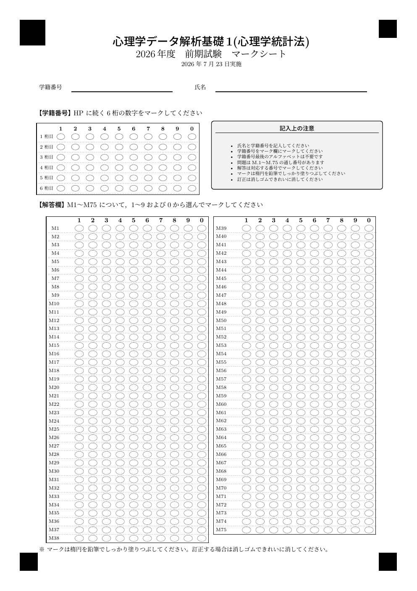
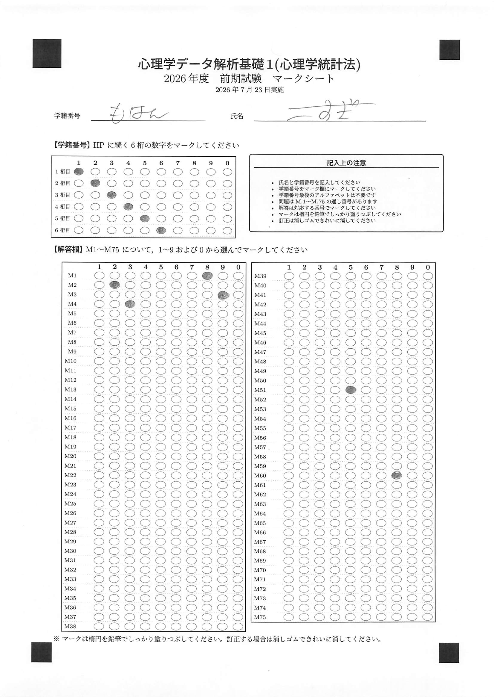
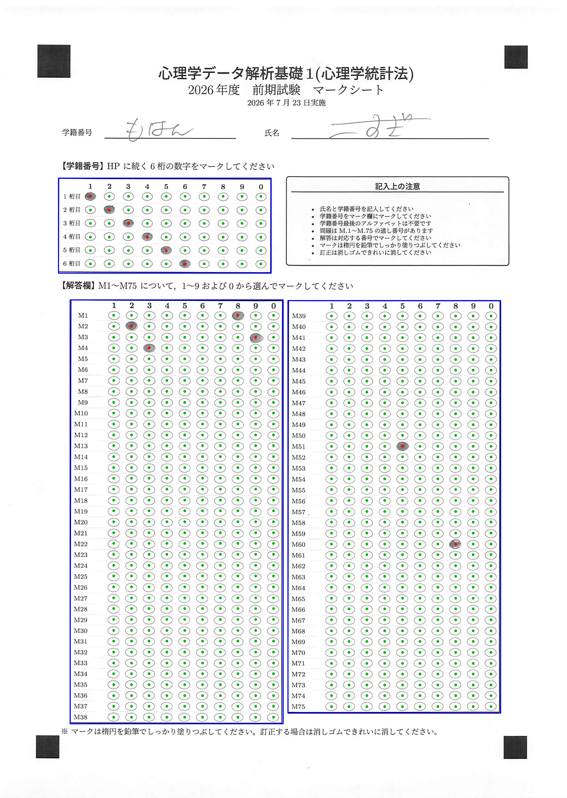
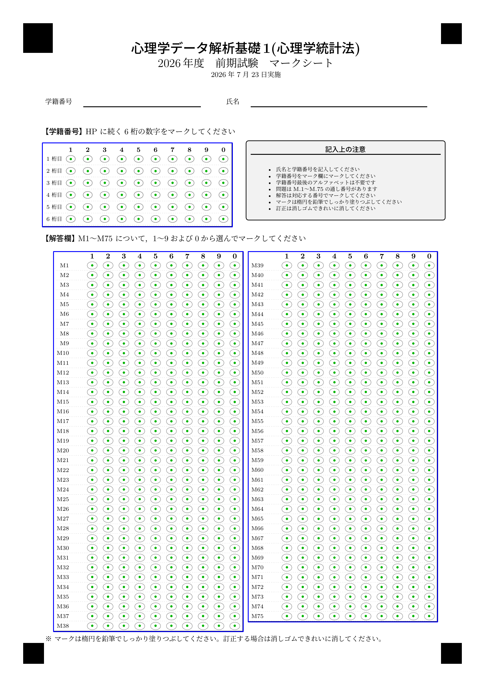

tikzomr は，TeX/TikZ
で作ったマークシートを読み取って回答を CSV 化する R パッケージです。
中心にあるのは single source of truth，すなわち 1 つの
config から，
- 組版する
.tex（＝実際に印刷する紙面）と - 読み取り定義（各マークの座標）
が 同時に 決まる，という設計です。読み取り位置を手で置く作業が要りません。 答案画像はすべてこの端末で処理され，クラウドには送信されません（プライバシー安全）。
このページのコードは流れを示すためのもので，実行はしていません（組版には LuaLaTeX が要るため）。 掲載している画像は同梱の例（
inst/examples/）から生成したものです。
インストール / Install
# 依存: R パッケージ magick, pdftools（システムに ImageMagick, poppler）
remotes::install_github("kosugitti/tikz-omr")マークシートの組版には
LuaLaTeX（lualatex）と日本語フォント環境が必要です。
1. マークシートを作る / Generate a sheet
default_config() が 2026 様式（75 問・ID 6
桁）を返します。年度で変わる所だけ差し替えます。
library(tikzomr)
cfg <- default_config()
cfg$answer$n_questions <- 60
cfg$answer$col_split <- list(c(1, 30), c(31, 60))
cfg$id$n_digits <- 7
art <- make_marksheet(
cfg,
tex_path = "marksheet.tex",
marks_path = "marksheet.marks.csv", # 読み取り定義（座標）
fiducials_path = "marksheet.fiducials.csv"
)生成された marksheet.tex を LuaLaTeX で 2
回 組版します （四隅マークの位置確定に
remember picture の 2 パスが必要です）。
でき上がる紙面はこのようなものです（同梱例）。四隅の位置決めマークと，ID 欄・解答欄が並びます。

2. スキャンを読み取る / Read scans
印刷 → 試験 → ADF スキャナで PDF 化（200dpi 推奨）。読み取り定義を読み込み，スキャンを回答テーブルにします。
layout <- list(
marks = read.csv("marksheet.marks.csv"),
fiducials = read.csv("marksheet.fiducials.csv")
)
# 1 枚
res <- read_marksheet("one_scan.jpg", layout)
# 一括 — 入力は 3 通り（PDF・フォルダ・ファイル群）:
tbl <- read_marksheet_batch("all_students.pdf", layout) # まとめ PDF 1 枚
tbl <- read_marksheet_batch("scans/", layout) # フォルダ（中を全部）
tbl <- read_marksheet_batch(c("a.jpg", "b.pdf"), layout) # ファイル群（混在可）
write.csv(tbl, "responses.csv", row.names = FALSE)
review <- attr(tbl, "review") # 要目視（複数塗り・ID 不明）四隅の位置決めマークと射影変換（homography）で，スキャンの傾き・拡縮・平行移動を自動的に吸収します。
出力スキーマは source, ID1..IDn, M1..Mq です（手書き DIY
様式と互換）。 塗り率のしきい値 fill_thr は既定
0.13（鉛筆マーク向け。清刷り前提なら 0.20 でもよい）。
固定接頭辞（学部コードなど全員共通の先頭文字）は，印字のみでマーク対象外にできます。
cfg$id$prefix <- "HP" # 紙面に「先頭に HP」と刷られ，読み取り時に id 列 "HP123456" が復元される3. 目視確認 / Eyeball a sheet
overlay_marksheet()
は，検出したマークを重ねた注釈画像を返します。
緑＝検出・赤＝複数塗り・青枠＝四隅
です。読み取りが正しく効いているかの確認に使います。
ov <- overlay_marksheet("one_scan.jpg", layout)
magick::image_write(ov, "check.png")

空欄の紙面に読み取り位置を重ねると，格子と各マーク中心が config どおりに載っていることが分かります。

4. GUI で行う / Use the local GUI
生成と読み取りを，ブラウザの GUI「マークシート工房」で行えます（要
shiny, DT）。
すべてこの端末で動き，答案画像は外部に送信されません。
すぐ試す / Try the bundled example
同梱の 2026 様式とサンプルスキャンで，読み取りだけをすぐ試せます。
layout <- example_layout()
res <- read_marksheet(
system.file("examples", "sample_scan.jpg", package = "tikzomr"),
layout
)
# ID = 123456 ; M1 = 8, M2 = 2, M3 = 9, M4 = 3, M51 = 5, M60 = 8